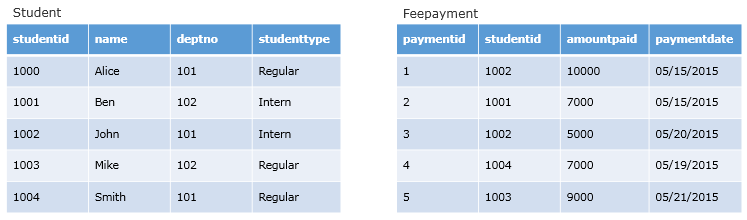
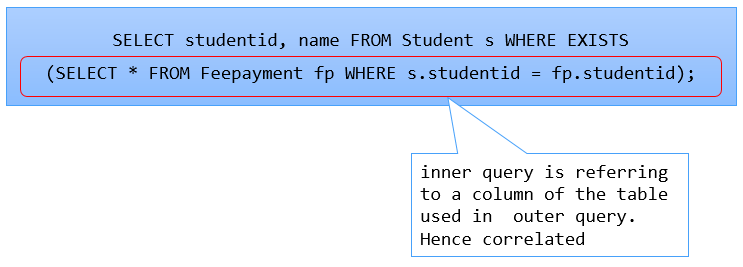

The EXISTS / NOT EXISTS keyword is used to check whether a sub query returns any row(s).
The main query displays the row if sub query following the EXISTS returns at least one row i.e. EXISTS returns TRUE.
If sub query does not return any rows, then EXISTS returns FALSE.
Consider the following Student and Feepayment tables

From these tables, we need to fetch the studentid and name of those students who have made atleast one fee payment.
The query for the stated requirement can be framed using EXISTS clause.

Food for thought: Is there any difference between giving a ‘*’ and column name(s) in the select list of sub query that follows EXISTS / NOT EXISTS clause?